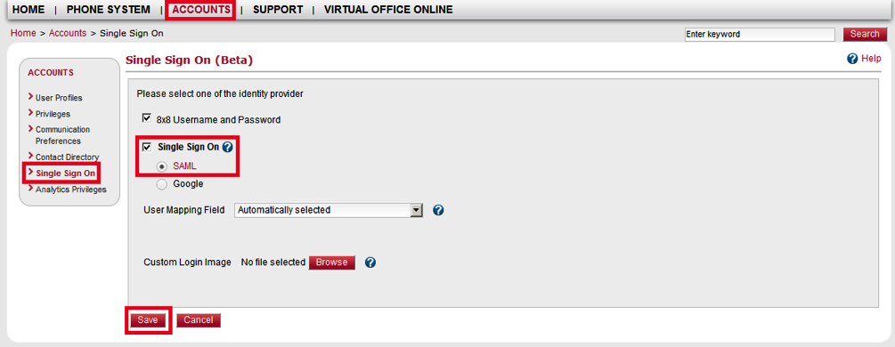
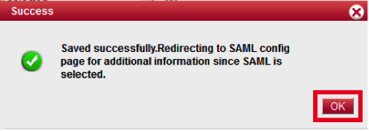
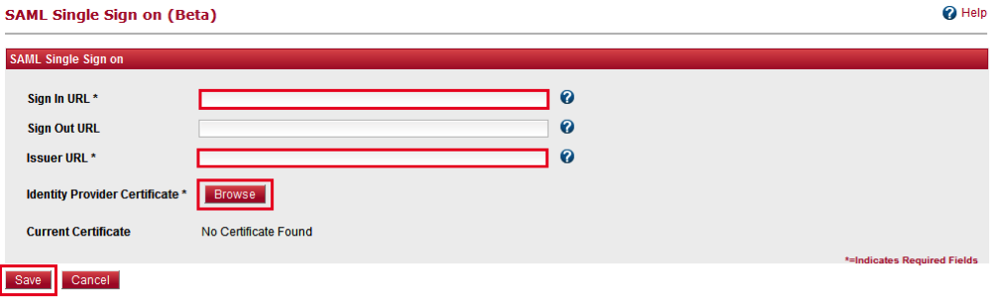
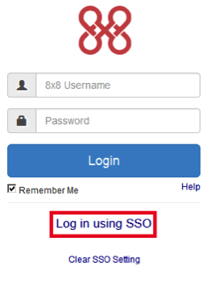

Login to 8x8, Inc. as a user with administrative rights.
Navigate to ACCOUNTS > Single Sign On.
Select the Single Sign On checkbox.
Select the SAML radio button.
Click Save.

When the Success message appears, click OK to acknowledge.

The SAML Single Sign on configuration page appears. Enter the following information (screen shot at end of step for reference):
Sign In URL: Copy and paste the following:
Sign into the Okta Admin Dashboard to generate this variable.
Issuer URL: Copy and paste the following:
Sign into the Okta Admin Dashboard to generate this variable.
Identity Provider Certificate: Download and save the following certificate, then click Browse to upload it to 8x8:
Sign into the Okta Admin Dashboard to generate this variable.
Click Save.

Done!
Notes:
SP-initiated flows and IdP-initiated flows are supported.
Just In Time (JIT) provisioning is not supported.
For SP-initiated Flows:
Click on the Use Single Sign On link:

Enter your 8x8 Username or Email, then click Continue:

A Log in using SSO link will appear, click on this link for SP-initiated flows.
